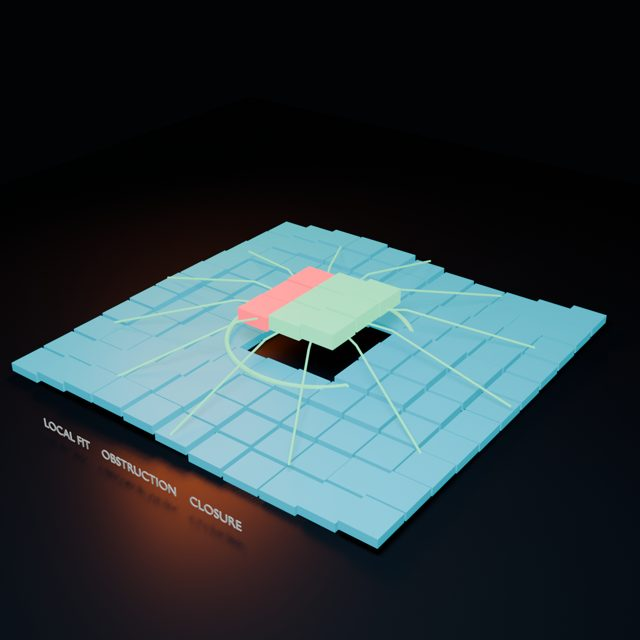
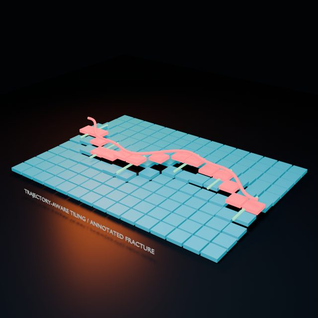
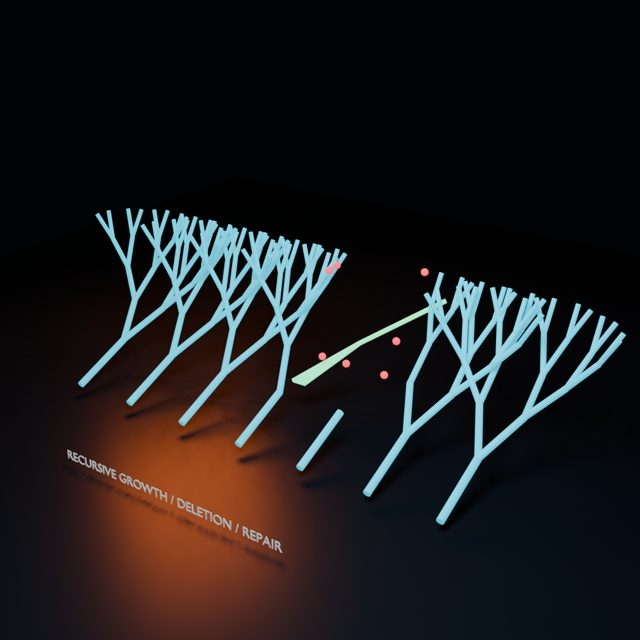
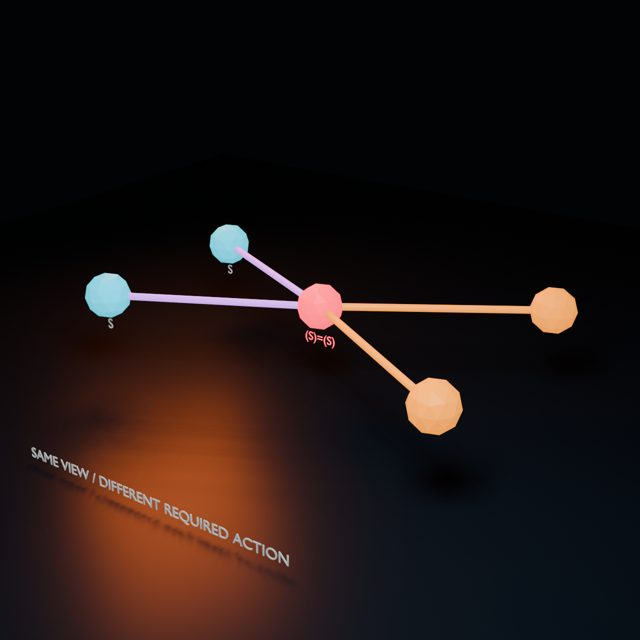
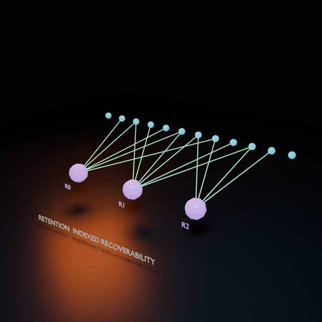
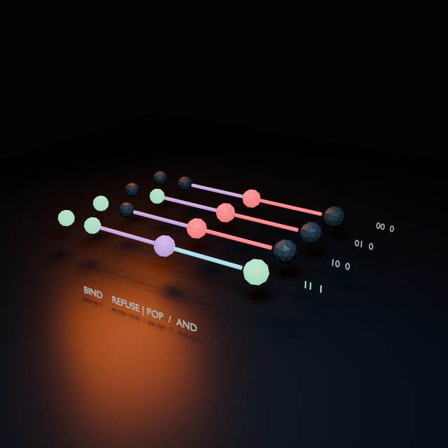
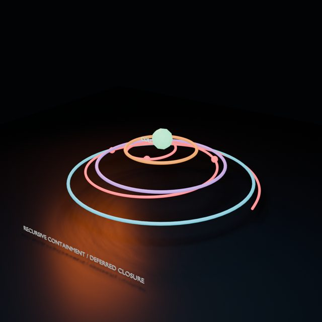
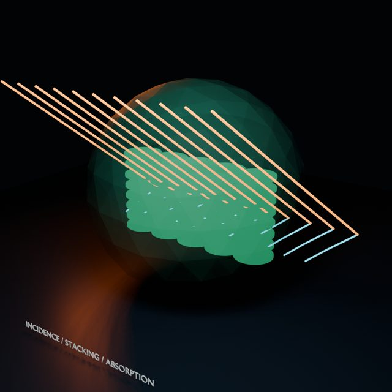
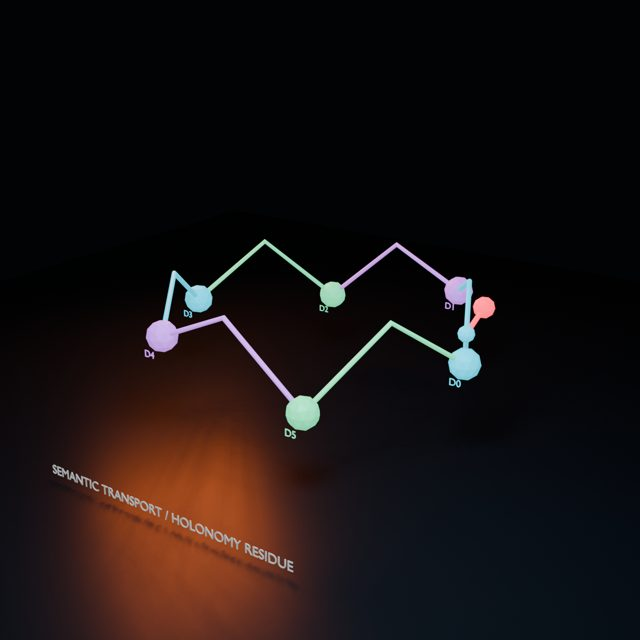

16 experiments visible
Orthodromes and Libration
Intersecting spherical frames with an orbital libration envelope.
How do orthodromic frames intersect a libration envelope?
Spherical Service Network
Weighted service hubs inducing a secondary spherical network.
How do weighted service hubs induce a secondary spherical network?

Constraint Closure
A local obstruction reconciled into a globally coherent state.
Can a locally plausible obstruction be reconciled into global closure?

Annotated Fracture
Trajectory-aware tiling responding to a structured perturbation.
How does trajectory-conditioned tiling respond to an annotated fracture?
Partial Phase Locking
Persona trajectories converging locally while coupling globally.
Which trajectories converge within a persona and which couple across personas?
Recursive Veiling
Signal recoverability measured across nested visibility thresholds.
Which parts of a signal remain recoverable through nested veils?

Recursive Repair
Generated growth rerouting around a deleted region.
How does recursive growth route around a deleted region?
Worldline Selection
Candidate histories accepted or rejected by spatial constraints.
Which candidate histories survive spatial constraints?

Consequential Aliasing
One apparent view concealing states that require different actions.
When does one projection hide states requiring different continuations?

Indexed Recoverability
System retention compared with participant-specific access.
Which retained events remain recoverable to each participant?

Primitive Logic
Bind, Refuse, and Pop executing the four AND input cases.
How do Bind, Refuse, and Pop execute the four Boolean input cases?

Deferred Closure
A pending token crossing nested scopes before Collapse.
How does a pending token cross scopes before Collapse?

Light Capture
Incidence angle and membrane stacking shaping absorbed paths.
How do incidence angle and membrane stacking alter light paths?
Proton Gradient
Stored potential routed through rotary transport channels.
How does a stored gradient route through rotary transport?
Fibered DSL Transport
Local domain transport above a shared linguistic base.
Where can local DSL transport proceed, and where is it obstructed?

Semantic Holonomy
Meaning transported around a DSL loop and returned with residue.
What residual remains after semantic transport around a DSL loop?